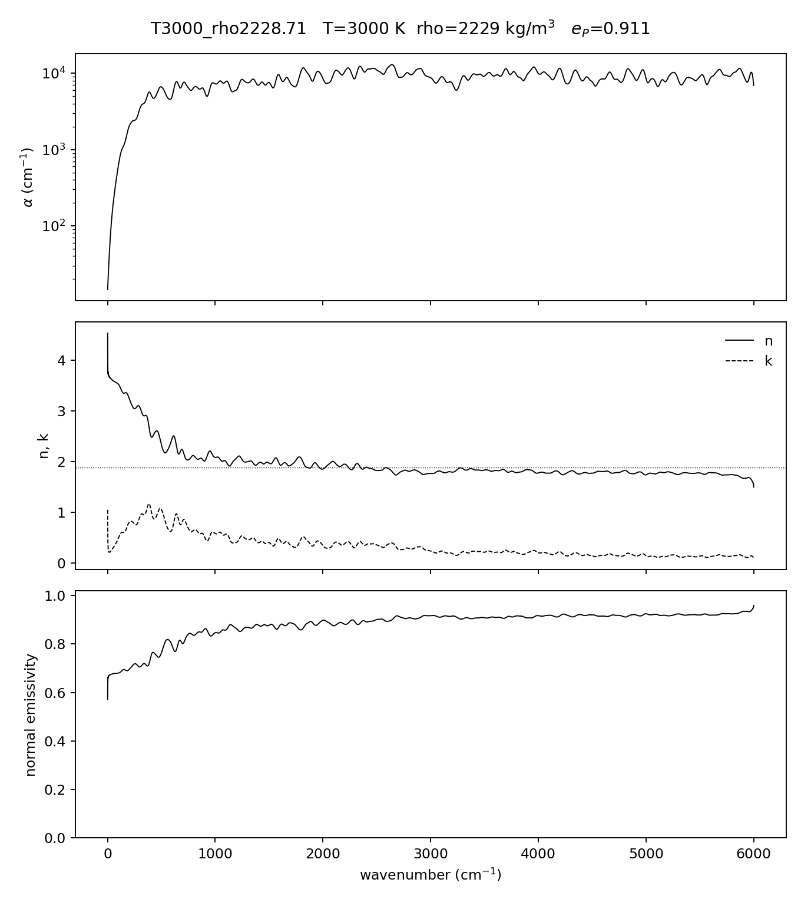

Warm dense water at hybrid-DFT accuracy
MACE potential · IR opacity · emissivity
for sub-Neptune interiors (1000–3000 K, ~100–2230 kg m−3)
Harry Taylor · Oxford AOPP / Atomic & Laser Physics
Navigate: → / ← or space. Press g for overview.
7 · Emissivity (new)
Normal spectral emissivity via self-consistent dielectric construction
(k fixed by α; iterate ε₂=2nk, ε₁=ε∞+KK[ε₂]);
Fresnel; e∈[0,1] by passivity. n∞ via Lorentz–Lorenz (αe=1.47 ų, interim). All 27 points, zero warnings.
| ρ branch | eP | σDC |
|---|
| ~100–300 kg/m³ | 0.998–1.000 | ≈0 S/cm |
| 500–800 | 0.987–0.995 | <0.2 S/cm |
| 1040–1520 | 0.957–0.979 | 0.1–0.7 |
| 1730–2229 | 0.911–0.945 | 0.6–0.8 |
Headline: eP collapses onto a function of density alone
(Fresnel loss from n∞(ρ)); temperature dependence is
sub-0.001 at fixed ρ under the interim baseline.

Figure: 3-panel emissivity, dense point. Copy: scw_prod/emissivity/T3000_rho2228.71/emissivity_*.png.
10 · Status, to-do, roadmap
Technical to-do (TODO.md)
- Regenerate stale ×1000 npz; retire --alpha-scale
- Hold-out split → live parity benchmark
- git-lfs models; pin versions; CI
- Per-point DFT polarizabilities for n∞
- Copy convergence artefacts + deck figures
Understanding roadmap (ROADMAP.md)
- How much does the functional matter? (running)
- Dispersion isolated: revPBE0 ± D3
- Is emissivity really density-only?
- NQE bound; dissociation/σDC onset
- Line-list ↔ MD crossover map; mixtures
Conditions of use: T ≤ 3000 K, ρ within the trained envelope;
ratios robust, absolute values from post-fix data only. Full guidance: TESTING.md.